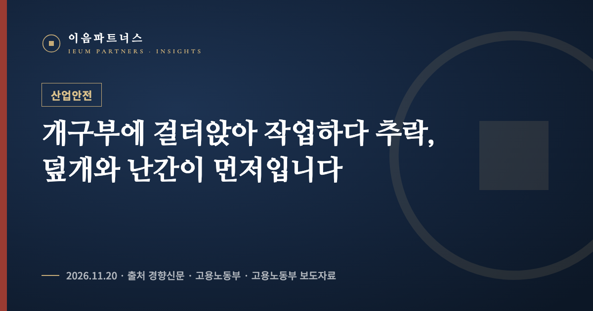

개구부에 걸터앉아 작업하다 추락, 덮개와 난간이 먼저입니다

바닥이나 구조물에 뚫어 둔 개구부(설비가 지나갈 수 있도록 뚫어 놓은 공간)는 공장과 건물 곳곳에 있습니다. 2026년 11월 20일 전북 김제의 공사 현장에서 하청 노동자가 개구부에 걸터앉아 작업하다 떨어져 숨졌습니다. 이 글에서는 사고 내용과 개구부 추락을 막는 기본 수칙, 대표님이 확인할 점을 정리합니다.
개구부는 작업을 위해 덮개를 열거나 치우는 순간 위험해지기 때문에, 공사 현장뿐 아니라 설비 점검 때도 주의가 필요합니다. 우리 사업장의 위험 요인을 함께 점검해 보고 싶으시다면 카카오톡 채널 이음파트너스로 문의해 주세요.
무슨 일이 있었나
사고는 2026년 11월 20일 오후 3시 55분쯤 김제시 진봉면 국립새만금수목원 조성 공사 현장에서 일어났습니다. 60대 하청업체 노동자가 약 5m 높이에서 떨어져 머리를 크게 다쳤고, 현장에서 숨졌습니다. 경향신문은 노동자가 중수처리시설 개구부에 “걸터앉은 채로 작업을 하다가 중심을 잃고 추락한 것으로 파악됐다”고 보도했습니다(경향신문).
노동자는 안전모를 쓰고 동료들과 함께 일하던 중이었습니다. 경찰과 고용노동부는 해당 업체를 중대재해처벌법 적용 대상으로 보고 사고 경위를 조사하고 있습니다.
지난달에도 개구부에서 사고가 있었습니다
고용노동부의 2026년 10월 중대재해 사이렌 자료에는 10월 19일 울산의 공장 증축 현장에서 개구부 덮개를 치우려고 밀다가 중심을 잃고 개구부로 떨어져 숨진 사고가 실려 있습니다(고용노동부 중대재해 사이렌). 고용노동부는 덮개가 뒤집히거나 떨어지지 않게 설치하고, 덮개에 개구부임을 알 수 있도록 표시하라고 안내합니다.
두 사고 모두 개구부 가장자리에서 몸의 중심을 잃은 경우입니다. 안전모만으로는 떨어지는 것 자체를 막을 수 없기 때문에, 개구부 둘레에 안전난간이나 덮개를 먼저 갖추고, 그것이 어렵다면 안전대를 걸 수 있는 설비를 마련해야 합니다.
형이 확정된 회사들이 가장 많이 어긴 것
고용노동부가 지금까지 공표한 중대재해 형 확정 사업장 81곳 가운데 75곳(92.6%)이 유해·위험 요인을 확인하고 개선하는 절차의 점검 의무를 어긴 것으로 나타났습니다(고용노동부 보도자료). 개구부처럼 눈에 보이는 위험을 미리 찾아 고치는 절차가 실제로 돌아가는지 살펴볼 필요가 있습니다.
대표님이 지금 확인할 것
- 사업장과 공사 현장의 개구부 위치를 목록으로 관리하고 있는지
- 덮개가 고정되어 있고, 개구부임을 알리는 표시가 되어 있는지
- 개구부 주변 작업 때 안전난간이나 안전대 부착설비를 먼저 갖추는지
- 걸터앉거나 몸을 내밀어 하는 작업 방식을 금지하고 다른 방법을 마련했는지
참고한 자료
- 국립새만금수목원 공사 현장서 60대 노동자 추락사···경찰 ‘사고 경위 조사 중’ — 경향신문 (2026.11.20)
- '26년 10월 중대재해사이렌(오픈채팅방) 자료 공개 — 고용노동부 (2026.11.02)
- 고용노동부, 형이 확정된 중대산업재해 발생 사업장 37개소 공표 — 고용노동부 보도자료 (2026.10.15)
우리 사업장의 유해·위험 요인 점검 절차가 제대로 돌아가는지 궁금하시다면 카카오톡 채널 이음파트너스로 문의해 주세요.
※ 이 글은 일반적인 정보 제공을 위한 것으로, 개별 사안은 세무사·노무사 등 전문가와 함께 확인하시기 바랍니다.